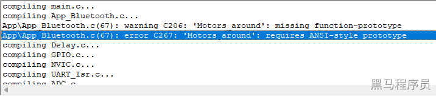
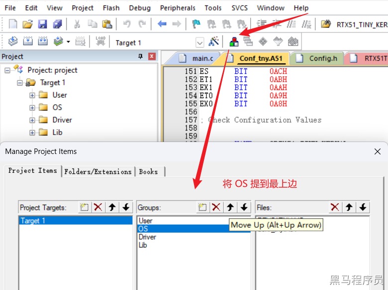
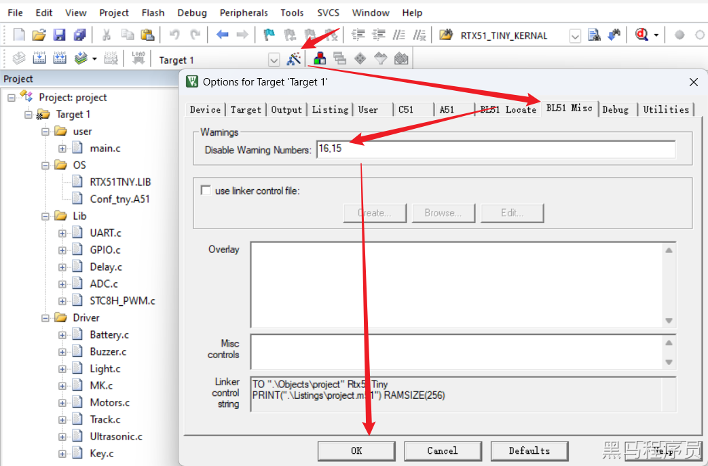

<!DOCTYPE lake>
<p data-lake-id="u365f816a" id="u365f816a"><span data-lake-id="uca3fc840" id="uca3fc840">所有错误及警告文档：</span><a class="yuque-card-link" href="https://developer.arm.com/documentation/101655/0961/BL51-User-s-Guide/Error-Messages" rel="noopener noreferrer" target="_blank">bookmarkInline：bookmarkInline</a></p><p data-lake-id="u3023f63b" id="u3023f63b"><span data-lake-id="u52ed6c8f" id="u52ed6c8f">优先在arm官网搜索官方回答：</span><a data-lake-id="u6bb795af" href="https://developer.arm.com/documentation/" id="u6bb795af" rel="noopener noreferrer" target="_blank"><span data-lake-id="u50e29b25" id="u50e29b25">https://developer.arm.com/documentation/</span></a></p><h2 data-lake-id="yM8yi" id="yM8yi"><span data-lake-id="u4bf432e5" id="u4bf432e5">错误ERROR</span></h2><h3 data-lake-id="px8Md" id="px8Md"><span data-lake-id="ud74636e7" id="ud74636e7" style="color: rgb(51, 51, 51)">undefined identifier</span></h3><span class="yuque-card-unsupported">[codeblock]</span><p data-lake-id="u1590cf1d" id="u1590cf1d"><strong><span class="lake-fontsize-12" data-lake-id="ub08dbae8" id="ub08dbae8" style="color: rgb(51, 51, 51)">解决：</span></strong><span class="lake-fontsize-12" data-lake-id="uf693d8d6" id="uf693d8d6" style="color: rgb(51, 51, 51)"> 检查是否引入头文件：</span><code data-lake-id="u5a8af80d" id="u5a8af80d"><span class="lake-fontsize-12" data-lake-id="ua8cb3788" id="ua8cb3788" style="color: rgb(51, 51, 51); background-color: rgb(243, 244, 244)">GPIO.h</span></code></p><h3 data-lake-id="ylZkl" id="ylZkl"><span data-lake-id="u6284e863" id="u6284e863">ERROR L104: MULTIPLE PUBLIC DEFINITIONS</span></h3><span class="yuque-card-unsupported">[codeblock]</span><p data-lake-id="u0b851320" id="u0b851320"><span data-lake-id="u615d23c2" id="u615d23c2">重复定义的公共函数或变量，全局搜索提示给的</span><code data-lake-id="u4da11db8" id="u4da11db8"><span data-lake-id="uf17ddbaf" id="uf17ddbaf">UART_CONFIG</span></code><span data-lake-id="uf1e8761f" id="uf1e8761f">，看哪里重复了，改个名字，或加个</span><code data-lake-id="u1bce473f" id="u1bce473f"><span data-lake-id="ud9dc6ebe" id="ud9dc6ebe">static</span></code></p><h3 data-lake-id="Dt97W" id="Dt97W"><span data-lake-id="u1258c82b" id="u1258c82b">error C267: 'Motors_around': requires ANSI-style prototype</span></h3><p data-lake-id="ua0ff1131" id="ua0ff1131"></p><p data-lake-id="u40bd949a" id="u40bd949a"><span data-lake-id="ucbdcc7ff" id="ucbdcc7ff">函数</span><code data-lake-id="uc23d2fc3" id="uc23d2fc3"><span data-lake-id="u71c26019" id="u71c26019">Motors_around</span></code><span data-lake-id="u29902254" id="u29902254">所属的头文件没include引用进来, 或者函数名字参数写错了</span></p><p data-lake-id="ua47f615e" id="ua47f615e"><span data-lake-id="u22f3aa9a" id="u22f3aa9a">​</span><br/></p><h2 data-lake-id="wUaQG" id="wUaQG"><span data-lake-id="u72be89be" id="u72be89be">ERROR L107: ADDRESS SPACE OVERFLOW</span></h2><span class="yuque-card-unsupported">[codeblock]</span><p data-lake-id="u69f1bc78" id="u69f1bc78"><span data-lake-id="uc04a4b00" id="uc04a4b00">内存空间不够用了，默认使用内存 128 字节。地方</span></p><p data-lake-id="ub0efeafa" id="ub0efeafa"><br/></p><h2 data-lake-id="FZx0x" id="FZx0x"><span data-lake-id="uaa15c279" id="uaa15c279">警告WARNING</span></h2><h3 data-lake-id="Fz8di" id="Fz8di"><span data-lake-id="udc5cd40e" id="udc5cd40e">WARNING L1: UNRESOLVED EXTERNAL SYMBOL</span></h3><p data-lake-id="ufb694999" id="ufb694999"><span data-lake-id="u89b4e61b" id="u89b4e61b">未解决的外部符号</span></p><h3 data-lake-id="RlPo0" id="RlPo0"><span data-lake-id="u5607098a" id="u5607098a" style="color: rgb(51, 51, 51)">WARNING L2: REFERENCE MADE TO UNRESOLVED EXTERNAL</span></h3><p data-lake-id="ufd0bba92" id="ufd0bba92"><span data-lake-id="uaf5fb02d" id="uaf5fb02d" style="color: rgb(51, 51, 51)">引用导致未解决的外部符号</span></p><span class="yuque-card-unsupported">[codeblock]</span><p data-lake-id="u14efb946" id="u14efb946"><span data-lake-id="u3d67e5ae" id="u3d67e5ae">在main.c文件里调用了NVIC_UART1_INIT的函数，没有找到c实现，需要添加包含此函数的c到工程。</span></p><p data-lake-id="uc35a8b3b" id="uc35a8b3b"><span data-lake-id="u30e69090" id="u30e69090">​</span><br/></p><p data-lake-id="u57b702ca" id="u57b702ca"><strong><span class="lake-fontsize-12" data-lake-id="ub68a7f7c" id="ub68a7f7c" style="color: rgb(51, 51, 51)">解决：</span></strong><span class="lake-fontsize-12" data-lake-id="u40ac6d9f" id="u40ac6d9f" style="color: rgb(51, 51, 51)"> 添加</span><code data-lake-id="u31f4a9d7" id="u31f4a9d7"><span class="lake-fontsize-12" data-lake-id="uf856a57a" id="uf856a57a" style="color: rgb(51, 51, 51); background-color: rgb(243, 244, 244)">XXX.c</span></code><span class="lake-fontsize-12" data-lake-id="ue9f2f186" id="ue9f2f186" style="color: rgb(51, 51, 51)">到工程 （NVIC.c）</span></p><p data-lake-id="u81b5a55c" id="u81b5a55c"><br/></p><h3 data-lake-id="CJMTR" id="CJMTR"><span data-lake-id="u07b3dba2" id="u07b3dba2">WARNING L7: MODULE NAME NOT UNIQUE</span></h3><span class="yuque-card-unsupported">[codeblock]</span><p data-lake-id="ua77f2f74" id="ua77f2f74"><span class="lake-fontsize-10" data-lake-id="u291c7972" id="u291c7972" style="color: rgb(51, 51, 51)">模块名不唯一，多个文件里中声明了相同的模块名，或是对模块编译顺序进行调整。本例是关于</span><code data-lake-id="u8c124b7d" id="u8c124b7d"><span class="lake-fontsize-10" data-lake-id="u02076d2a" id="u02076d2a" style="color: rgb(51, 51, 51)">?RTX51_TINY_KERNAL</span></code><span class="lake-fontsize-10" data-lake-id="u8c9db279" id="u8c9db279" style="color: rgb(51, 51, 51)">的编译警告，可以将</span><code data-lake-id="uba210336" id="uba210336"><span class="lake-fontsize-10" data-lake-id="u345aa359" id="u345aa359" style="color: rgb(51, 51, 51)">Conf_tny.A51</span></code><span class="lake-fontsize-10" data-lake-id="u2c591d76" id="u2c591d76" style="color: rgb(51, 51, 51)">文件所在目录OS提到最上边即可。</span><strong><span class="lake-fontsize-10" data-lake-id="u10b073fd" id="u10b073fd" style="color: rgb(51, 51, 51)">（也可直接删掉OS目录及模块）</span></strong></p><p data-lake-id="u920f779c" id="u920f779c"></p><h3 data-lake-id="Gnhe4" id="Gnhe4"><span data-lake-id="u5a04c5b7" id="u5a04c5b7">WARNING L15: MULTIPLE CALL TO SEGMENT</span></h3><span class="yuque-card-unsupported">[codeblock]</span><p data-lake-id="ue3342b06" id="ue3342b06"><span data-lake-id="udcd757ab" id="udcd757ab">多处调用代码块警告，忽略即可：</span></p><p data-lake-id="udff8eceb" id="udff8eceb"><code data-lake-id="u88e99801" id="u88e99801"><span data-lake-id="uf708fa20" id="uf708fa20">Options for Target</span></code><span data-lake-id="ue5dfb091" id="ue5dfb091"> -&gt;</span><code data-lake-id="ueb9193ea" id="ueb9193ea"><span data-lake-id="u689f108d" id="u689f108d"> BL51 Misc</span></code><span data-lake-id="u3e6c01b5" id="u3e6c01b5"> -&gt; </span><code data-lake-id="u49817f6d" id="u49817f6d"><span data-lake-id="u89740229" id="u89740229">Warnings|Disable Warning Numbers</span></code><span data-lake-id="u4490dcea" id="u4490dcea"> 添加15，多个忽略Number用逗号</span><code data-lake-id="ud9adb32d" id="ud9adb32d"><span data-lake-id="u74749f64" id="u74749f64">,</span></code><span data-lake-id="u8e7d3932" id="u8e7d3932">分隔</span></p><h3 data-lake-id="y3jyE" id="y3jyE"><span data-lake-id="u2c47de8a" id="u2c47de8a">WARNING L16: UNCALLED SEGMENT</span></h3><span class="yuque-card-unsupported">[codeblock]</span><p data-lake-id="uf9916fbf" id="uf9916fbf"><span data-lake-id="u35491da6" id="u35491da6">有声明的函数未调用，忽略即可：</span></p><p data-lake-id="u93be9268" id="u93be9268"><code data-lake-id="uf985e368" id="uf985e368"><span data-lake-id="u2bd0ce8a" id="u2bd0ce8a">Options for Target</span></code><span data-lake-id="u0f584fab" id="u0f584fab"> -&gt;</span><code data-lake-id="uc706fac3" id="uc706fac3"><span data-lake-id="u0c2ebef0" id="u0c2ebef0"> BL51 Misc</span></code><span data-lake-id="u4cdfec63" id="u4cdfec63"> -&gt; </span><code data-lake-id="ub521e72b" id="ub521e72b"><span data-lake-id="u0e624a91" id="u0e624a91">Warnings|Disable Warning Numbers</span></code><span data-lake-id="u4a2a6d5a" id="u4a2a6d5a"> 添加16，多个忽略Number用逗号</span><code data-lake-id="ue1bc29b9" id="ue1bc29b9"><span data-lake-id="u2203efaa" id="u2203efaa">,</span></code><span data-lake-id="u714f0fe8" id="u714f0fe8">分隔</span></p><p data-lake-id="ubf851c9c" id="ubf851c9c"></p>